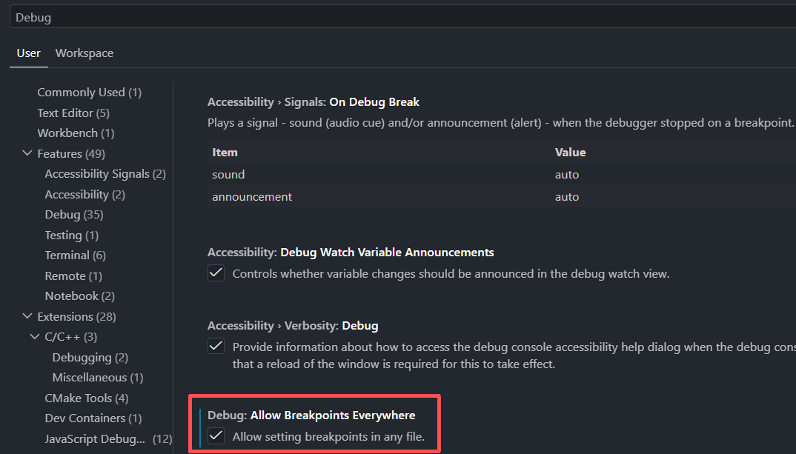
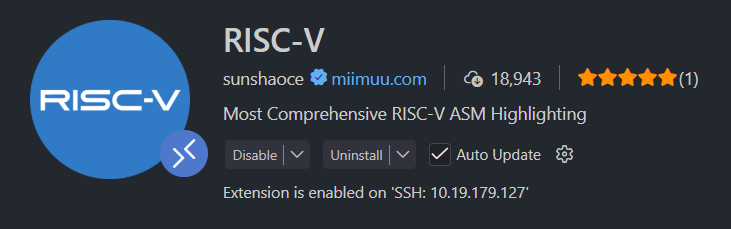
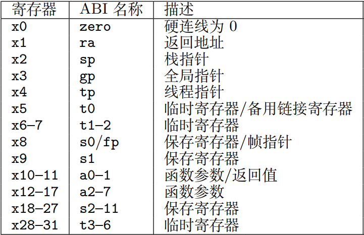

实验一 汇编程序与调试
本次实验使用QEMU模拟器模拟RISC-V计算机，熟悉和编写汇编语句，编写简单的等差数列求和程序。 使用交叉编译工具链编译程序，在QEMU模拟器上运行并调试程序。
1 QEMU 模拟器
1.1 QEMU 模拟器是什么
QEMU (Quick Emulator) 是一个开源的机器模拟器和虚拟化软件，可以模拟x86、ARM、RISC-V、PowerPC等多种处理器架构。 QEMU有3种级别的模拟， Full-system emulation 、 User-mode emulation 和 Virtualization 。
Full-system emulation 几乎完全模拟整个处理器架构的特性，接近真实的硬件。
User-mode emulation 用于运行 Linux/BSD 环境的应用程序。
Virtualization 和 KVM 一起用于运行高性能虚拟机。
我们本次实验是可以使用 Full-system emulation 或者 User-mode emulation 模式的，但是为了不引入函数调用规范等后续内容， 使用 Full-system emulation 模拟 RISC-V 裸机环境，并且32位risc-v和64位risc-v对实验内容不会产生任何影响，因此使用 qemu-system-riscv64 模拟器。
1.2 为什么需要模拟器
模拟器可以在不同的指令集架构、系统下面运行， 不需要真实的硬件系统，使用起来非常方便。 并且可以进行非常低层次的调试，可以随时调试程序，
还能够简化部分的硬件操作，不用掌握所有部分的硬件细节（比如硬盘）。 对于初学 RISC-V ，学习特权级、学习操作系统都是非常好的方式。
2 获取代码框架
我们为大家准备了一个简易的框架代码，本次实验只需要在上面修改即可。
git clone https://github.com/HuangXiCi/yonex.git
在代码仓库 yonex 的 Makefile 框架里面已经给出了如何编译程序和启动qemu， 我们有很多配置参数，从上往下主要分为以下几个部分。
在 Ubuntu 上安装 vscode ，可以在 vscode 官网下载 .deb 安装包，然后使用 sudo dpkg -i 包名.deb 进行安装。
在 vscode 的设置中，搜索 Debug ，勾选上 Debug: Allow Breakpoints Everywhere ，允许在任何文件中打断点，
这样就可以在汇编源文件中打断点调试。

在vscode在扩展中可以安装 RISC-V 扩展，即可对 risc-v 汇编文件语法高亮。

2.1 编译源文件
我们这次会编写汇编文件，如何将文件汇编为机器看得懂的二进制指令呢？ 我们将使用x86 Linux平台为riscv64编译裸机程序，需要使用交叉编译工具链。
交叉编译是指使用一种平台的机器（如x86 Linux平台）编译另一种平台的机器（如RISC-V Linux平台）的程序， 由于每个平台的差异很大，因此我们需要使用一套交叉编译工具链 riscv64-unknown-elf 工具链，目标是 riscv64 裸机平台。
我们的框架代码内容不多，源文件在src目录下，有两个汇编源文件(.S)，boot.S和func.S，其中boot.S对 sp 寄存器初始化，
然后通过 j _func 跳转到 func.S 中的 _func 函数， _func 函数是你需要完成的函数。
gcc 可以根据文件后缀名自动判断如何处理文件，因此使用 riscv64-unknown-elf-gcc -c $(SRC) -o $(OBJ) 可以编译源文件。 将汇编源文件(.S)汇编为可重定位文件(.o)，然后还需要进行链接操作，为我们的程序中可重定位的部分载入正确的地址。
.S 和 .s 文件
.S 和 .s 文件都是指汇编文件，它们有什么区别？不知道就老老实实STFW。
2.2 补充跳转指令
risc-v 中拥有 jal 、jalr 和 branch 分支指令，前两个是无条件跳转，跳转的方式不同； 而 branch 分支指令条件跳转，会对两个寄存器的值进行比较，满足条件才会跳转。 这里使用伪代码给出这些指令的含义，下面还会提供一些例子演示如何使用这些指令。
JAL 指令
JAL 指令跳转相对于PC值进行偏移，支持20位符号扩展的立即数偏移， 并且将下一条指令的地址写入目的地寄存器(rd)中。
rd = pc + 4; pc = pc + imm;
JALR 指令
JALR 指令跳转相对源寄存器(rs1)进行偏移，支持12位符号扩展的立即数偏移， 并且将下一条指令的地址写入目的地寄存器(rd)中。
tmp = rs1; rd = pc + 4; pc = tmp + imm;
这里引入 tmp 临时变量是为了保证源寄存器和目的地寄存器相同时指令含义的正确性。
branch 条件分支指令
risc-v有若干条条件分支指令，需要对两个源操作数进行比较，如果满足条件才会跳转。 以beq指令为例，其含义是如果两个源操作数相等(Branch if Equal)时才进行跳转，支持13位符号扩展的立即数偏移。
if (rs1 == rs2) pc = pc + imm;
2.3 链接
上面的跳转指令中提到，risc-v 拥有对当前 PC 值的相对跳转指令 jal 或者条件分支指令，我们称之为直接跳转； 还有跳转到绝对地址的 jalr 跳转指令，通过寄存器值来进行跳转，我们称之为间接跳转。
对于绝对跳转指令，我们必须要加载正确的地址，否则程序会运行不正确， 而相对于 PC 值的直接跳转，则需要加载正确的偏移值。
因此链接脚本就需要为程序指定位置，每个段应该放在哪里。
在代码框架的linker目录下，有一个简单的链接脚本 linker.ld。
1 OUTPUT_ARCH(riscv)
2 ENTRY(_start)
3
4 SECTIONS
5 {
6
7 . = 0x80000000,
8
9 .text.boot : { *(.text.boot) }
10 .text : { *(.text) }
11 .data : { *(.data) }
12 }
在两个源文件中，我们只定义了三个段 .text.boot 、 .text 和 .data 段。
它们按照这个顺序依次排放，并且 .text.boot 的起始地址是从 0x80000000 开始。
思考题 链接到不同的位置，值会怎么变（TODO）
3 GDB 图形化调试
我们的框架中给出了 vscode gdb 调试 qemu。
我们通过 make gdb 启动 qemu 等待调试，然后在左侧 Run and Debug 中开启 gdb 调试。
如何调试操作 (TODO)
4 汇编函数编写
risc-v 通常有32个通用寄存器x0 ~ x31，这些寄存器都有对应的别名(ABI 名称)， 在实际的汇编编程中，请使用别名，gdb调试时方便对应。

在本次实验时，我们使用 a0 ~ a7 寄存器完成编程。
4.1 等差数列求和
等差数列求和需要3个参数，首项a0、公差d以及求前n项的和， 为简化设计，我们可以将3个参数放置在三个寄存器中，比如a0, a1, a2寄存器中，然后使用笨办法通过循环语句进行求和。
我们需要使用循环语句实现求和，下面给出了循环语句的 C 程序和汇编实现。
1 for (int i = 0; i < n; i++) {
2 ... // 省略一些操作
3 }
4 ... // 循环之外的操作
1 li a5, 0 // int i = 0;
2 // 假设 n 放在 a2 寄存器中
3 .loop:
4 bge a5, a2, .end
5 ... // 对应省略一些操作
6 addi a5, a5, 1
7 j .loop // 跳转到 .loop 处继续循环
8 .end:
9 ... // 对应循环之外的操作
在上面的汇编语言中使用了一些伪指令，这些伪指令是由一条或多条实际的指令构成。 例如 li 指令含义是加载立即数(load imm)，编译器会根据立即数的大小自动生成对应的指令，可能是一条，也可能是多条。
我们的跳转指令也不需要程序员手动去计算实际的偏移值是多少（数相隔了多少条指令），可以直接定义标签(label)，标签后面需要带一个 : ，
编译器会计算跳转到该标签处所需的偏移值。
bge 是如果源操作数寄存器1大于或等于源操作数寄存器2才跳转(Branch if Greater or Equal)，也就是当 a5 大于等于 a2 时跳转到.end处，循环结束。 而j .loop则是无条件跳转，回到.loop处继续循环。标签前面打点(如 .end:)代表这个标签在文件外部不可见，是一个局部标签。 通常函数需要外部可见，因此不需要打点。而这些标签是为了for循环跳转，通常在前面打一个点。
完成等差数列求和，自定义首项a0、公差d以及求前n项的和，并在实验报告中解释（TODO）
4.2 斐波那契数列求和
完成斐波那契数列求和，自定义求前n项的和，并在实验报告中解释（TODO）